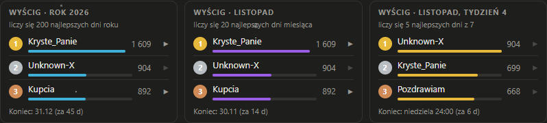
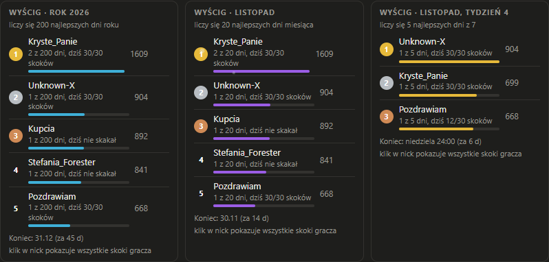
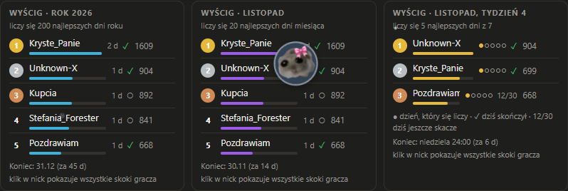

Prawdziwe wyniki z dziś. Dziś wszyscy skończyli skoki, więc trzecie miejsce w tygodniu (Pozdrawiam) ma na próbę stan „12 z 30 skoków”, żeby było widać, jak wygląda ktoś, kto jeszcze skacze. Szare kółko z chomikiem to spadający awatar z mini-gry strony, nie część wersji.


